Master's Thesis · University of Applied Sciences Potsdam · 2022–2023
CycleWise
A research-driven concept for a period tracker that supports users through every life stage — including the one no existing app was designed for.
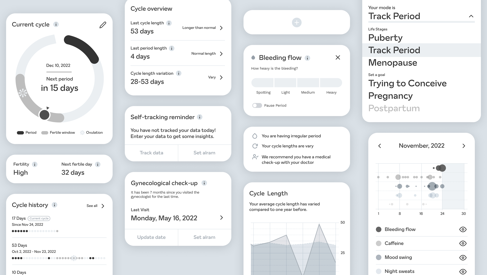
Role
Product Designer
Researcher
Timeline
Aug 2022 → Feb 2023
Methods
Survey (n=50)
Competitive analysis
Empathy mapping
Qualitative interviews
Prototyping & usability testing
At a glance
0 of 6 apps
None of the top period trackers on the App Store fully supported menopausal transition
50 survey responses
Tri-lingual survey (EN / DE / KR) with perimenopause and postmenopause respondents
6 user tests
Including end-users, a FemTech industry stakeholder, and two OB/GYN physicians
Problem
Period trackers were designed for one phase of life.
The transition to menopause is a significant stage — characterized by irregular periods and symptoms like hot flashes, night sweats, and sleep disruption. Despite the prevalence of period tracking apps in the mobile health industry, none were built to support this transition.
Existing period trackers do not provide adequate support for tracking and managing the symptoms and changes that occur during menopausal transition — leaving many menstruators without the tools they need to navigate this important life stage.
The research question guiding this thesis:
How can the current period tracker's user experience be improved so that it can also support the menopausal transition phase?
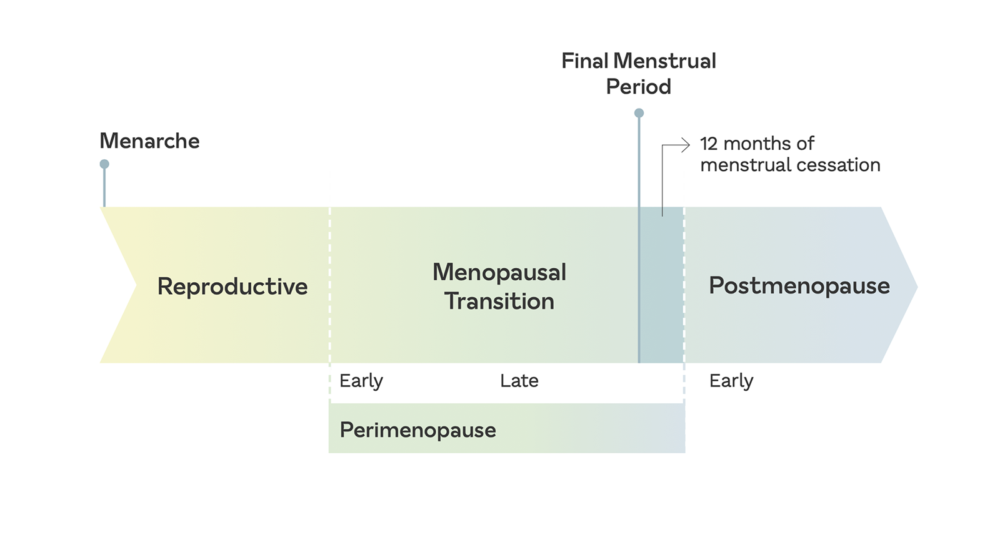
Approach
Understanding a gap the market had ignored.
I used the double diamond framework throughout — diverging to understand the problem space deeply before converging on a design direction.
Competitive analysis
I analyzed six top-ranked period trackers from the iOS App Store Health & Fitness category, examining whether they supported users' full lifetime goals and life stages.
None of the six apps fully supported menopausal transition.
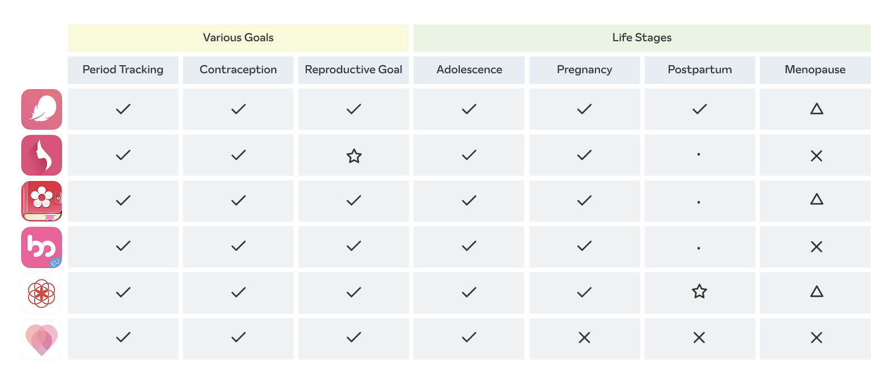
Survey
I surveyed 50 people in perimenopause or postmenopause through a tri-lingual questionnaire (English, German, Korean). Two major discoveries emerged.
Absence of education. 75% said 'No' when asked if they'd learned about menopause formally. Half had only read about it online — where accuracy is unreliable.
Need for safe spaces to talk. Over 80% said they discussed menopause with family or friends — but felt there was no dedicated space to do so, especially online.
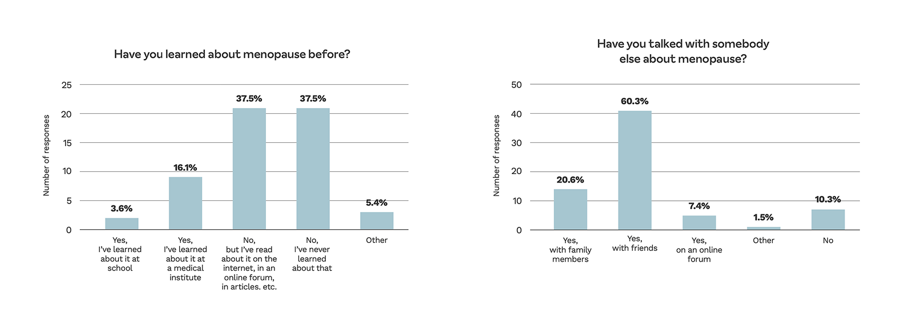
Empathy mapping
I organized survey responses into an empathy map to bridge the gap between what users say and what they actually feel. Key themes: being unprepared, wanting accurate information in advance, and feeling anxious about symptoms they couldn't explain.
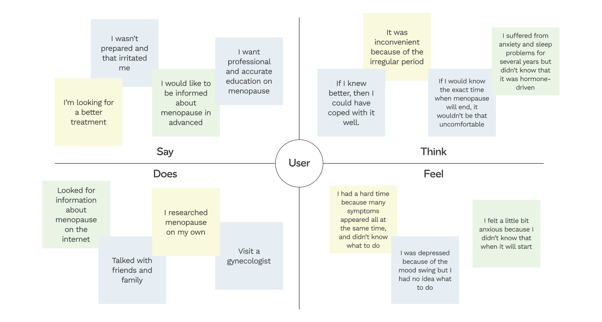
How might we
I translated user pain points into design opportunities using "How might we" questions — then identified the most feasible solutions for a mobile app context.
Prototyping and iteration
I built from sketches to low-fidelity prototypes, running two rounds of qualitative interviews — first with two end-users and one FemTech industry stakeholder, then with one additional FemTech stakeholder and two OB/GYN physicians. Each round lasted ~45 minutes, conducted remotely.
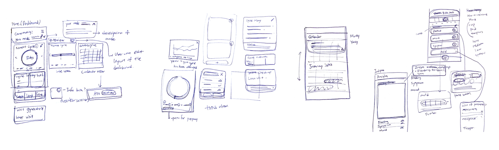
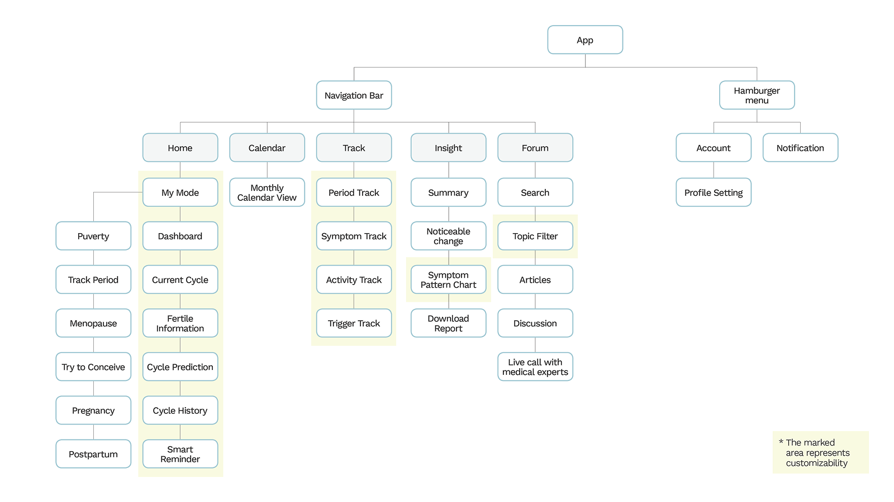
Three design iterations came from the interview findings:
Iteration 1 — Personalization visibility. Made each dashboard widget visually editable and made the mode selector more prominent with contextual information.
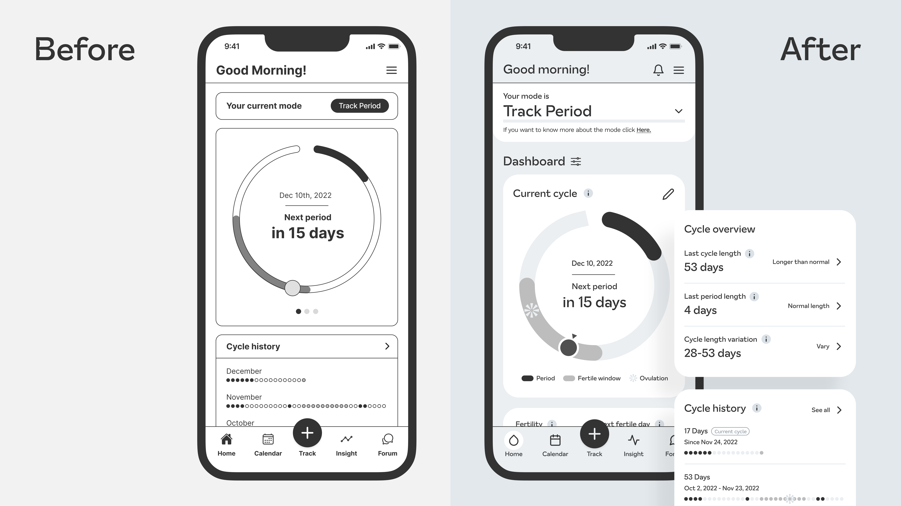
Iteration 2 — Data tracking subtlety. Added severity scales, customizable tracking parameters, and a pause period option to generate more accurate visualizations.
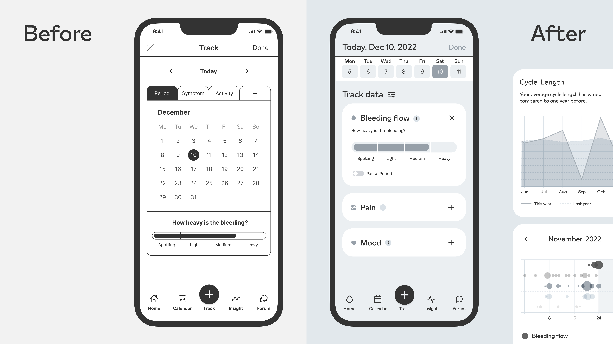
Iteration 3 — Visual clarity. Replaced heavy text blocks with icons, illustrations, and graphical elements to reduce cognitive load.
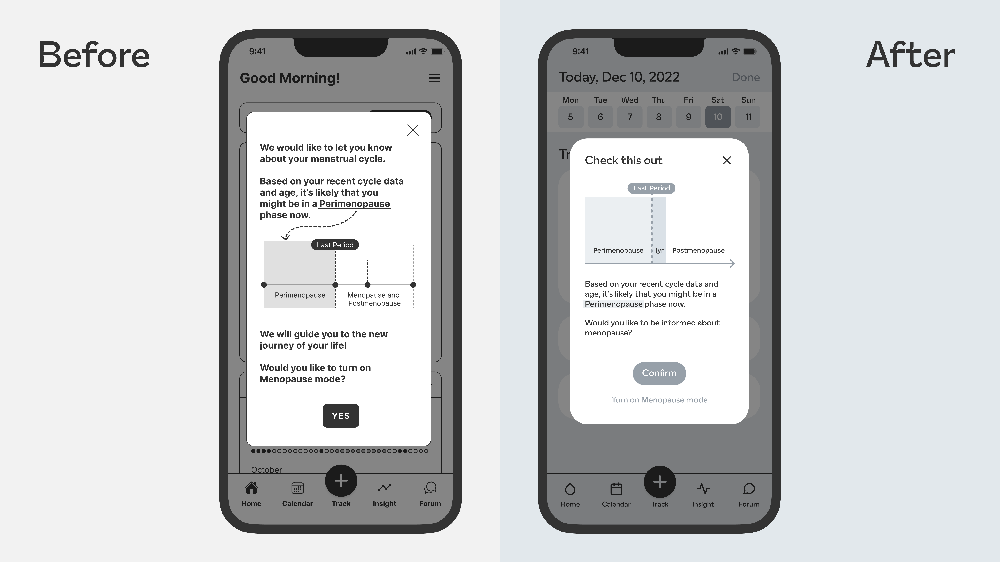
Solution
A period tracker that grows with you.
CycleWise is a customizable period tracker that adapts to a user's life stage and goals — from puberty through menopause. The solution centers on three design concepts.
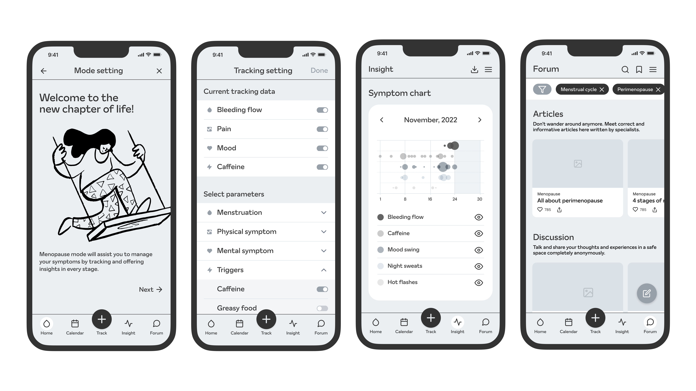
1. Integrate Menopause Mode
The app recognizes that menopause is a natural life transition — not a disease. By adding a Menopause Mode alongside Puberty, Track Period, Trying to Conceive, and Pregnancy, the app treats the full lifecycle of a menstruator as equally worthy of support. The mode selector is prominent on the home screen and adapts the entire experience to the user's current stage.
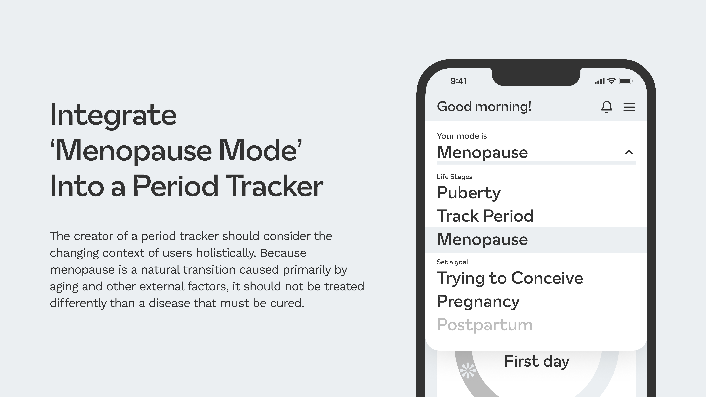
2. Give users autonomy through customization
Giving users authority over their own health data increases engagement and insight. CycleWise allows users to customize their dashboard widgets, choose which symptoms and triggers to track, and edit their tracking parameters freely. The customizable dashboard adapts to what matters most to each individual — not a one-size default.
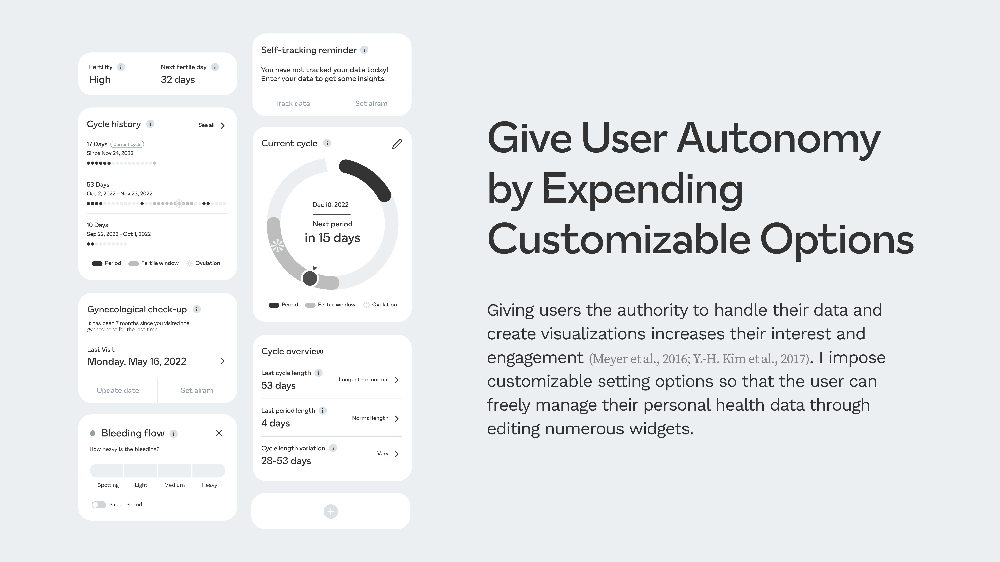
3. Make the best use of data visualization
Self-tracked data is only useful if it tells a story. The Insight tab synthesizes patterns from a user's data — cycle length trends, symptom correlations, noticeable changes over time — displayed through clear, readable charts. This gives users meaningful feedback on their own bodies, and can support conversations with their physicians.
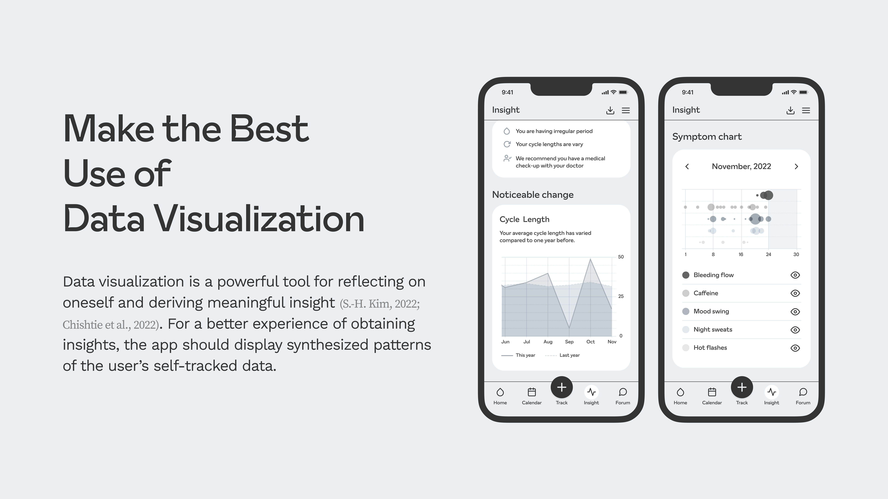
Reflection
Validated by users, physicians, and the research gap itself.
- CycleWise is a research concept, not a shipped product. The impact is measured through research rigor and user validation — not analytics.
- All 6 prototype test participants found the experience easy to navigate, intuitive, and much cleaner than existing apps
- The symptom matrix chart in the Insight tab was noted as useful not just for users, but for physicians making diagnoses
- Participants responded positively to the language used — "the new chapter of life" was specifically called out as framing menopause positively rather than clinically
- The Forum concept was noted as genuinely helpful — the topic filtering was particularly well-received
What I learned
1. Human-centered research works across unfamiliar domains: I chose menopause because I found a genuine research gap — not because it was familiar to me. Through surveys, interviews, and academic literature, I was able to deeply understand a user group I had no personal experience with.
2. Continuous testing is essential: Testing from the earliest prototype stage let me iterate meaningfully rather than refine in the wrong direction. Even with limited access to the exact target users, remote testing revealed critical improvements at every round.
3. Academic research builds design confidence: Reading scientific literature and synthesizing it into design decisions gave me a stronger foundation for every choice. It's a skill I've carried into my product work — understanding the problem before reaching for a solution.
Full thesis available at fhp.incom.org